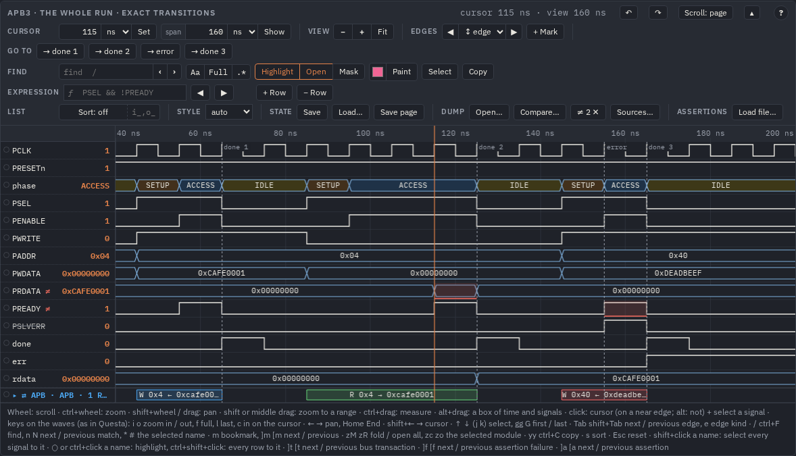
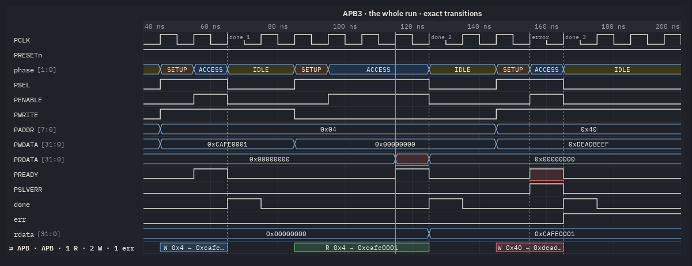

Compare two runs
The same test before and after a change of the RTL, or with another seed: Compare… reads the second run's dump over the waves you have open and marks, signal by signal, where the two differ. A red band on the row, ≠ on the name, and ]d to go from one difference to the next.
The example: run B of the APB testbench
The pictures compare the APB example (make examples, the view the whole run · exact transitions of
out/examples/apb/apb.html) with a run B made from its VCD by tests/guide_shots.py: in B the read at 115 ns
returns 0xDEADBEEF, the slave's PREADY for the write at 155 ns comes 10 ns later, and PSLVERR
is not in the dump at all. Three kinds of difference, each the way a real regression shows.
Loading the second dump
- Open the page with the first run (A). The compare works on exact waves — a page made with
--exact, the exact view of an example, a dump opened inwavelens/viewer.html. A clock-sampled view refuses: one cell per cycle is another time scale. - Compare… in the bar's dump group, then pick B's VCD. An FST: turn it into VCD text first,
bin/linux-x86_64/sva vcd b.fst --out b.vcd(in VS Code the extension does that for you). - The signals are matched by their path; else by their name under the page's scope; else by the one path of B that ends with the
name. One found by its short name only (
tb.a.readyastb.b.ready) is still compared but said: matched by name: tb.a.ready → tb.b.ready in the toast and in the tooltip of ≠ N ✕.
Reading the differences

PRDATA ≠: a band where B read another value; PREADY ≠: a band
of 10 ns where B's ready was still low; PSLVERR struck: B has no such signal. The bar says
≠ 2 ✕.| On the waves | Means |
|---|---|
| a red band on a row | over that stretch B holds another value (the stretch shaded, a line under it) |
| ≠ after a name | the signal differs somewhere in the time both dumps cover |
| a struck name | B has no such signal (one B's reader left out for dumpBudget is said apart in its tooltip) |
| ≠ N ✕ in the bar | N signals differ (the title line says where the first one is); ✕ compares no more |
Values are compared as values, not as text: bit for bit, x and z apart, so an unknown that became known
is a difference; a bus of another width differs everywhere; a real as a number (inf, -inf, nan
are three values); a string as text; a packed struct by its whole vector (≠ on its group). Only the time both dumps cover is compared;
the toast says so when B is shorter.
Going through them
]d / [d move the cursor to the next / previous difference: of the selected signal when it has some, else of every signal.

PRDATA first differs; the value
column shows A's value there.Pictures and what is kept
The picture of the view (the right button's PNG / SVG, the picture command) draws the bands, so a regression can go
into a review as it is:

A compare is a look at the waves for this session: it is not in the saved state nor in Save page — the page does not carry dump B. Keep the picture, or B's VCD next to the page, to show it again.